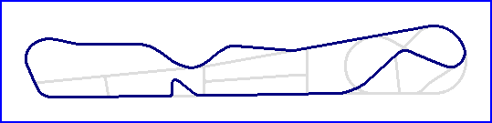

Deux-Montagnes
Road Course
|  | |
| Road Course | Oval |
| Length | 1.119 Miles // 1.800 km |
| Direction | Anticlockwise |
Contact Information |
|
| Address | Autodrome St.-Eustache 1016, Boulevard Arthur-Sauvé St.-Eustache Québec Canada J7R 4K3 |
| Telephone | +1 (1)450 472-6222 |
| Website | http://www.autodrome-st-eustache.com/ |
Lasted Updated: 05 October 2002 00:59:18 GMT Daylight Time